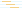

A world clock for the terminal.
See daylight, compare time zones, and find a time that works across cities.


$
pipx install terrahour
or download a ready-made executable for Linux or macOS, no Python needed
day / night map

working-hours timeline
DST radar